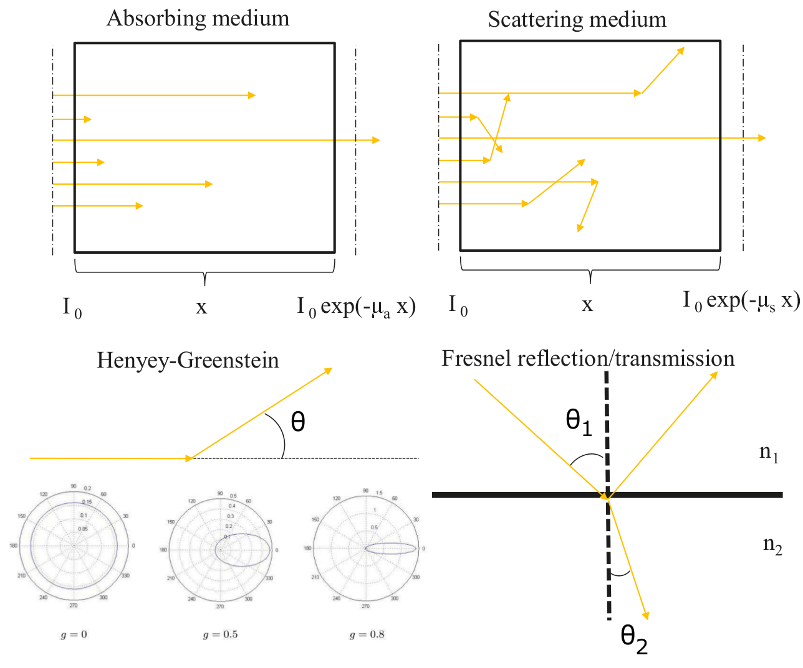

Features
- Triangular (2D) and tetrahedral (3D) presentation of geometry
- Material parameters:
- \(\mu_a\) - Absorption coefficient
- \(\mu_s\) - Scattering coefficient
- \(g\) - Anisotropy parameter of the Henyey-Greenstein scattering phase function
- \(n\) - Refractive index
- Photon packet method: implementation follows the Monte Carlo model
presented inS. A. Prahl, M. Keijz, A. J. Welch, 'A Monte Carlo
Model for Light Propagation in Tissue', SPIE Proc. Dosim. Laser
Radiat. Med. Biol., 5:102 (1989)
- Boundary conditions:
- Laser, isotropic, cosinic and Gaussian directivity patterns for light sources
- Piecewise constant refractive index
- Intensity (sinusoidal) modulated light sources
- Model solves the volumetric data as well as boundary data
- Written in C++
- Multi-thread support with OpenMP http://openmp.org/wp/
- Various example problems demonstrating different features of the model
- Random number generation with Mersenne-Twister algorithm following the
implementation by Matkoto Matsumoto and Takuji Nishimura at
http://www.math.sci.hiroshima-u.ac.jp/~m-mat/MT/emt.html
with modifications on the multithread support
- The implemented Mersenne-Twister has periodicity of 2^19937-1
- Support for k-Wave for simulating the photoacoustic effect (http://www.k-wave.org/)
- NetGen (.vol) file import for meshes
- Export to (.X3D) file format for efficient visualization of large tetrahedral meshes
|

|